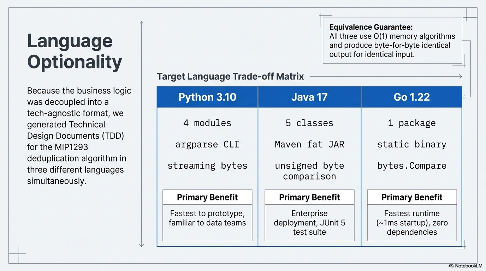

The AI doesn't just describe the past — it designs the future. Because business rules are extracted as technology-agnostic EARS specifications, implementation-ready technical designs can be generated in multiple languages from the same BRS.

Technology Choice Flexibility
The target language becomes a strategic decision made after understanding the system — not a constraint imposed before analysis begins. The same 20 business rules produce equivalent implementations in three languages:
| Language | Optimised For | Deploy Model |
|---|---|---|
| Python 3.10+ | Rapid data enrichment, complex analytics, regulatory processing | Script (needs runtime) |
| Go 1.22+ | High-concurrency, low-latency batch processing | Single static binary (~3 MB) |
| Java 17+ | Standard enterprise deployment, JVM service integration | Fat JAR (needs JVM) |
What "Implementation-Ready" Means
The generated code is not pseudocode or a sketch. It is:
- Complete — full module structure, CLI entry point, configuration, error handling
- Tested — table-driven test suites covering all branches and edge cases
- Traceable — every function maps back to a specific FRS requirement and BRS rule
- Production-grade — buffered I/O, O(1) memory, explicit error returns, zero third-party dependencies
- Equivalent — designed to produce byte-identical output to the original COBOL
Example: Billing Deduplication in Go
// Core algorithm — faithful to original COBOL MIP1293
// Compare 17-byte keys at byte offset 2 of each 1341-byte record
// Security < Daily → security-only record [G-002]
// Security > Daily → new record → write to output
// Security = Daily → duplicate → write to rejections
func Run(cfg Config) (*Result, error) {
// ...
for !mastEOF || !chgEOF {
cmp := bytes.Compare(effMast, effChg)
switch {
case cmp < 0: // Security-only
res.MastOnlyRecords++
// advance security reader
case cmp > 0: // New record
outmast.Write(chgBuf[:])
res.OutmastWritten++
// advance daily reader
default: // Duplicate
outrej.Write(chgBuf[:])
res.OutrejWritten++
// advance both readers
}
}
return &res, nil
}Key insight: Go's bytes.Compare() treats bytes as unsigned by default — matching COBOL binary (BI) comparison semantics perfectly. The single static binary deploys anywhere with no runtime dependencies and starts in ~1ms.
From One BRS, Multiple Implementations
The same business rule — for example, "WHEN an account key in the daily billing file matches an account key in the monthly security file, the system SHALL classify that daily billing record as a duplicate" — produces:
| Aspect | Python | Go | Java |
|---|---|---|---|
| Key compare | <, >, == on bytes | bytes.Compare() (unsigned) | Byte.toUnsignedInt() loop |
| File I/O | open('rb') | bufio.Reader + io.ReadFull | BufferedInputStream |
| Error model | Exceptions | Explicit error returns | Exceptions + try/catch |
| Memory | O(1) bytes | O(1) [1341]byte on stack | O(1) byte[] |
| Startup | ~50ms | ~1ms | ~200ms |
| Dependencies | stdlib only | stdlib only | stdlib only |
All three produce byte-identical output for the same input. The choice is purely strategic: team skills, infrastructure, performance requirements, deployment model.